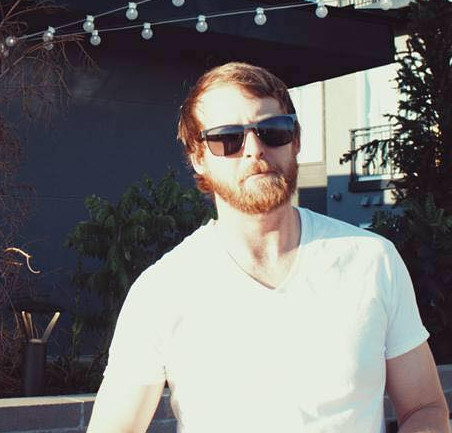

Personal Story
I’ve been using computers for literally as long as I can remember, so technological skills come as second nature to me. I took a Web Development class in High School and received the best student award. Additionally, I worked on our school’s journalism team as a photo editor, and our team won “Best Overall Yearbook Award” both years. My university education in Psychology and Business administration easily translate to the technological emphasis in User Experience that I am striving to become a part of. After graduating college, I moved to Denver, CO. It was there that I realized I could be a great programmer and Web Developer.
I started learning about JavaScript on my own using free web resources. Then I started taking classes at Red Rocks Community College in HTML, CSS, and Python. I fell in love with it and it became even clearer that front end web development was my calling. Now I am attending Nashville Software School and couldn’t be happier about it. I feel confident that they are preparing us for our career. I’m looking for the proper balance of not only being grateful for the community and the moment but also looking what the future will bring!
